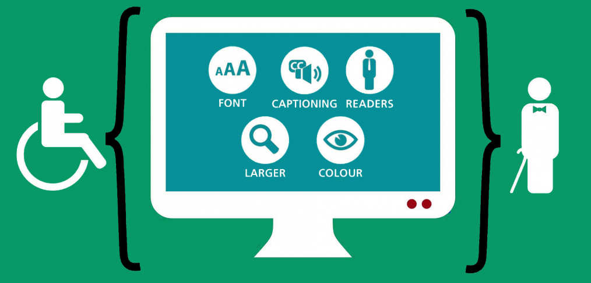

Assignment 2
1.1 Describing the content and layout for each page
My website will consist of four webpages in total; the homepage, ‘assignment 1’ page, ‘assignment 2’ page, and a ‘fun’ page containing random amusing content . The homepage page will have a gradient background starting from a light blue and than fading into grey. I will then use google fonts to select an appealing modern font, and use it as a universal header for my whole website. I will then make a nav bar using background colour and padding. The nav links will be in back font. The rest of my webpages will have a similar nav bar, webpage heading and colour scheme for the sake of continuity. After the nav bar on my homepage, I will then insert a large rectangle hero banner image indicating productivity. There will then be a white container underneath the banner where the rest of my home pages’s information will be placed. This information includes the ‘about me’ section and the ‘my skills sections’. The rest of my webpages will be laid out in a simple blog style format; header, a left hand sidebar and a contents section. The assignment answers webpage’s will have gifs in their respective left side for visuality.
1.5 Describe copyright and other constraints affecting websites
Copyright laws will influence what content is on websites; as developers have to make sure that their web content is not taken from someone else without permission. The solution to this is to either buy licenses or get written permission from the owner if you are planning on using some else’s content. I personally plan to make my own original content and information for my website, so I will not run into this obstacle. When using images or video; I will choose free to use licensed stock images and videos rather than other peoples’s content. This also applies to any font or music; I will always choose free to use stock licensed media.
Data Protection and GDPR may also restrict websites as publishers will have to make sure they have consent for any data taken from a user accessing their website. Terms and conditions will also be needed if a developer plans on storing user data.
A developer may also find it hard to acquire their planned domain name if it has been already purchased by someone else. Resulting in the developer choosing a more obscure domain name.
1.6 Describing access issues that need taking into account

The Equality Act 2010 (EQA) will need to be taking into account when creating any websites . People accessing websites may have disabilities like sight impairment; so planning the website in advance with this in mind should be a priority. One way developers may help people with sight impairments is by inserting alternative text to any images and video tags on their website; allowing screen reading software to be compatible with the website. Allowing users the choice to change text size and colour would also increase accessibility for all users.
I also need to make sure I incorporate open web standards that are accepted in all web browsers. Although I am using html5 and CSS; certain parts of my website may appear different or not appear at all if I choose to implement language or code that is experimental or new. Therefore I will use open web standards. I will use Mozilla MDN to help me with browser compatibility.
1.7 Describe which are the appropriate filetypes for websites

Appropriate file types for websites include .html (creating webpages), .txt, .pdf, .jpg (image file), .png(image file), .svg, .mpg(video file), and .mp3(sound file) files. All these files are open standard and will be compatible with any browser. I will make my my .html & css files in visual studio code. When choosing images I will choose either .jpeg or .gifs as they have high levels of flexible compression; meaning shrinking or enlarging the image won’t have a negative effect on visible quality or page-speed. SVG images are best for logos as they are made entirely of pixels, as such they don’t lose quality when shrinking down or enlarging. For sound, I would insert .mp3 files as they are highly compressed (small size) whilst possessing excellent sound quality.